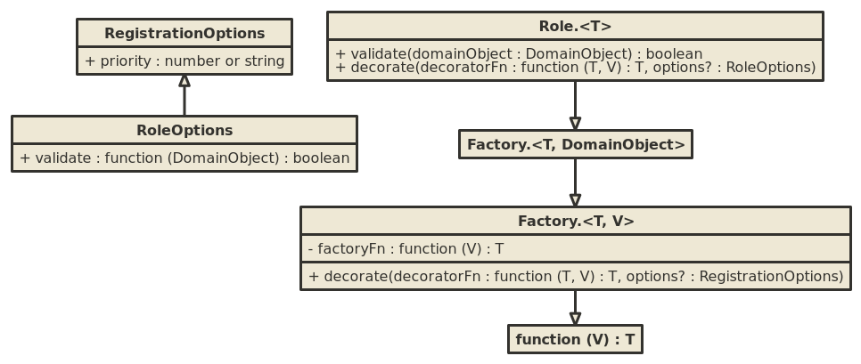

Roles are presented as an alternative formulation to capabilities (dynamic behavior associated with individual domain objects.)
Specific goals here:
Remove getCapability from domain objects; add roles as external
services which can be applied to domain objects.

function PlotViewPolicy(telemetryRole) {
this.telemetryRole = telemetryRole;
}
PlotViewPolicy.prototype.allow = function (view, domainObject) {
return this.telemetryRole.validate(domainObject);
};
PropertiesAction.prototype.perform = function () {
var mutation = this.mutationRole(this.domainObject);
return this.showDialog.then(function (newModel) {
return mutation.mutate(function () {
return newModel;
});
});
};
// Non-Angular style
mct.roles.persistenceRole.decorate(function (persistence) {
return new DecoratedPersistence(persistence);
});
// Angular style
myModule.decorate('persistenceRole', ['$delegate', function ($delegate) {
return new DecoratedPersistence(persistence);
}]);
// Non-Angular style
mct.roles.persistenceRole.decorate(function (persistence, domainObject) {
return domainObject.getModel().type === 'someType' ?
new DifferentPersistence(domainObject) :
persistence;
}, {
validate: function (domainObject, next) {
return domainObject.getModel().type === 'someType' || next();
}
});
function FooRole() {
mct.Role.apply(this, [function (domainObject) {
return new Foo(domainObject);
}]);
}
FooRole.prototype = Object.create(mct.Role.prototype);
FooRole.prototype.validate = function (domainObject) {
return domainObject.getModel().type === 'some-type';
};
//
myModule.roles.fooRole = new FooRole();